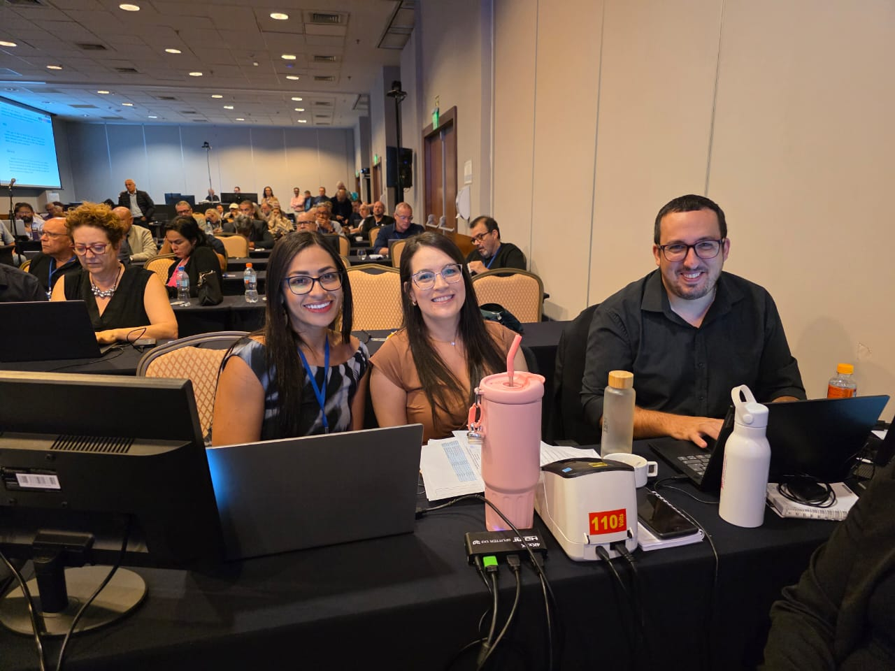

Concluído
Análise de Desempenho Judiciário
Painéis de Business Intelligence com milhões de registros do CNJ para avaliar a performance dos Juizados Especiais do TJDFT.
Disciplinas: Ciência de Dados, Estatística, Engenharia de Dados
Tecnologias: